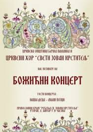

Многи чланови су отишли даље, ка другим обавезама које живот са собом носи. Неке друге чланове је срце вукло да се врате тамо одакле су почели, у хор који толике године траје.
А онда, стигли су и неки други чланови, схвативши колико је дивно певати, изучавати и учити о православној духовној музици.
Данас хор броји око 15 сталних чланова, али је њихова храброст и истрајност да се у овом времену баве духовном музиком огромна и вођена пре свега великом љубављу.
Клик на слику ће Вас одвести на кратку репортажу са Божићног концерта 8. јануара 2020. године 
Остале странице:
О настанку хора можете сазнати ОВДЕ
Биографија диригента хора
Рад и развој хора можете видети на овој страници.
Податке о аутору сајта можете видети ОВДЕ